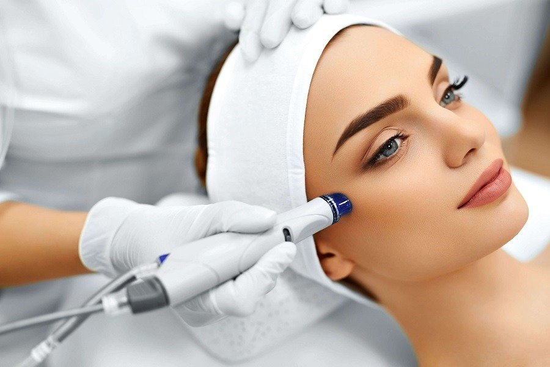

Higiene y oxigenación
Higiene personalizada de la piel con puntas de diamante: exfoliación controlada que, además de eliminar toxinas, oxigena el tejido, disminuye poros, arrugas, manchas y marcas de acné, aportando luminosidad.
Punta de diamante